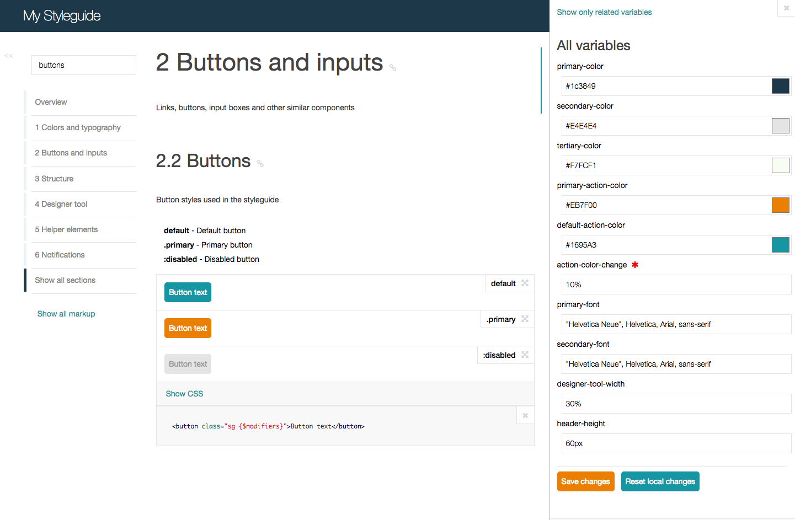

SC5 Styleguide
Informative and easily navigable live styleguide which can be edited directly in the browser

Easily view, search and test your styles with the AngularJS powered UI.
The enhanced KSS processing flow knows which styles and variables are related to the current component, allowing you to see all the related things in one place.
With the designer tool you can edit SASS or LESS variables directly via the web interface. All changes can be saved back to the original file.
All modifications are automatically updated and applied via web sockets on every device without reloading while you are editing. You will be notified of compilation errors too.
› npm install sc5-styleguide
› cd node_modules/sc5-styleguide
› npm run demo
Get started with using SC5 Styleguide as a command line tool o as gulp/grunt plugin . Stay tuned with following SC5 Styleguide GitHub Repo.